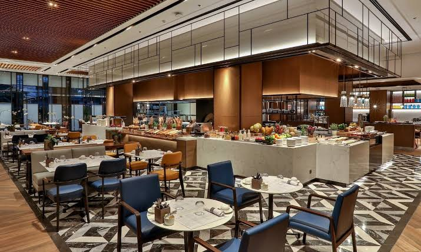
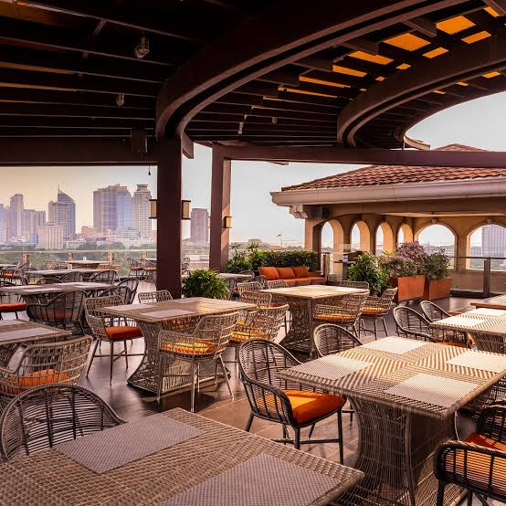
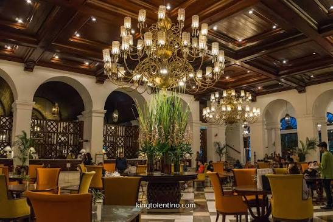
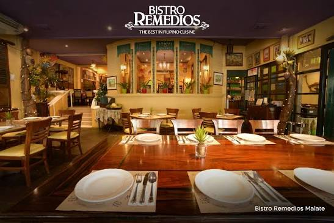

Top 5 Best Filipino Restaurants
The Philippines is celebrated for its diverse flavors, vibrant food culture, and delicious traditional dishes. Whether you’re looking for authentic Filipino cuisine or a more modern dining experience, the country has something for every food lover. Here are the top 5 Filipino restaurants that stand out for their outstanding dishes, welcoming atmosphere, and memorable dining experiences.

Manila Bay Kitchen
Manila Bay Kitchen is a welcoming restaurant that brings the rich and flavorful taste of Filipino cuisine to the table. Guests can enjoy a variety of traditional dishes made with fresh ingredients and authentic flavors. The restaurant offers a warm, inviting atmosphere that makes it a great place for family meals, casual dining, or gatherings with friends. With delicious food and friendly service, Manila Bay Kitchen is a wonderful spot for anyone looking to experience the taste of the Philippines.
Book Now!

Sky Deck at The Bayleaf Hotel
Sky Deck at The Bayleaf Hotel is a rooftop restaurant offering a memorable dining experience with beautiful views of Manila. Guests can enjoy a selection of delicious dishes while taking in the stunning city skyline and historic surroundings. Its relaxed and elegant atmosphere makes it an ideal place for romantic dinners, special occasions, or casual gatherings. With great food, scenic views, and a welcoming ambiance, Sky Deck is a wonderful spot to enjoy Manila from above.
Book Now!

Cafe Ilang-Ilang
Cafe Ilang-Ilang is a classic dining destination known for its elegant atmosphere and wide variety of dishes. The restaurant offers an impressive selection of local and international cuisine prepared with quality ingredients. Its refined setting makes it suitable for family meals, celebrations, business gatherings, and special occasions. With its delicious food and sophisticated ambiance, Cafe Ilang-Ilang provides a memorable dining experience in Manila.
Book Now!
Harbor View Restaurant
Harbor View Restaurant is a popular seaside dining spot where guests can enjoy delicious food with beautiful views of Manila Bay. The restaurant offers a variety of dishes in a relaxed setting that is perfect for enjoying a meal by the water. Its scenic location makes it especially enjoyable during sunset and for gatherings with family or friends. With its flavorful food and picturesque atmosphere, Harbor View Restaurant offers a memorable Manila dining experience.
Book Now!

Bistro Remedios
Bistro Remedios is a charming restaurant that showcases the rich flavors and traditions of Filipino cuisine. Its menu features classic Filipino dishes prepared with authentic ingredients and traditional cooking techniques. The warm and rustic atmosphere creates a comfortable setting for family meals, celebrations, and gatherings with friends. With its flavorful food and distinctly Filipino character, Bistro Remedios is a great place to experience local cuisine in Manila.
Book Now!